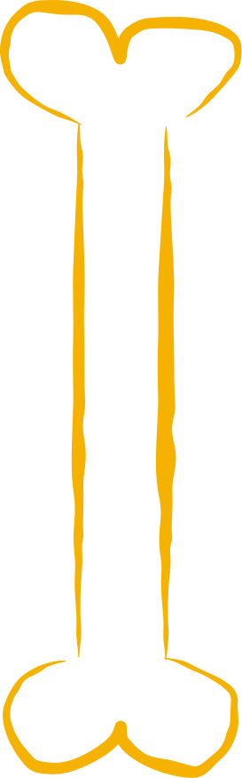
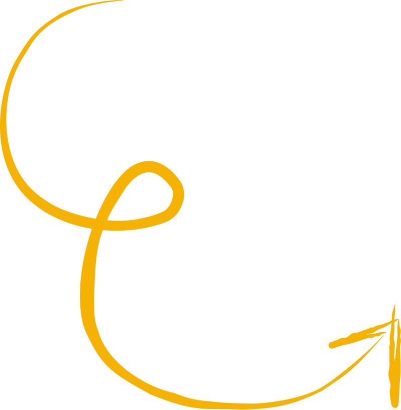
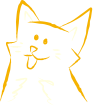

Azyl pro staré, týrané, hendikepované pejsky a kočičky
Místo, kde maličké šance měníme ve velké naděje.


Co děláme
Daisy azyl z.s. je malý rodinný azyl, který vznikl z lásky k těm, kteří
nejvíce potřebují naši pomoc. Pečujeme o stará, nemocná, opuštěná a hendikepovaná zvířata – o
chlupáče, kteří by jinde jen těžko hledali bezpečné místo.
U nás nacházejí klid, teplo
domova, odbornou péči a především lásku, která jim často v životě chyběla. Každé zvíře vnímáme
jako jedinečnou bytost a děláme vše pro to, aby mohlo prožít důstojný, spokojený a co
nejšťastnější život.

{% if animals.animals and animals.animals.size > 0 %}
{% if animals.animalsEnriched and animals.animalsEnriched.size > 3 %}
{% endif %}
{% endif %}
Adopce
Nalezenci k adopci
Podívejte se, jaké kočičky a pejsky momentálně nabízíme k adopci.
{% for animal in animals.animalsEnriched limit:3 %}
{% else %}
{% include "partials/animal-card.njk" %}
{% endfor %}
Adopce
Momentálně nemáme žádné pejsky a kočičky k adopci.